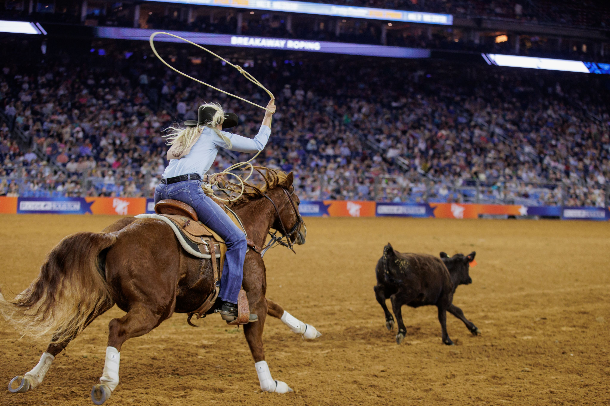
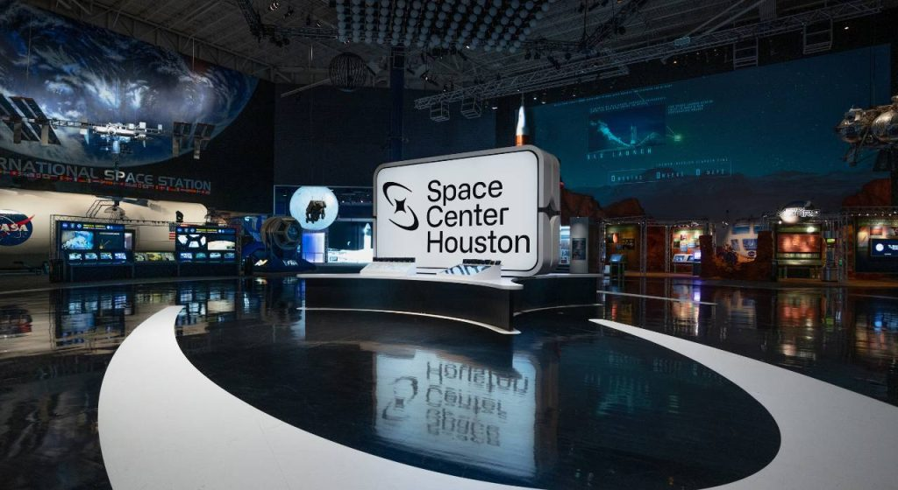
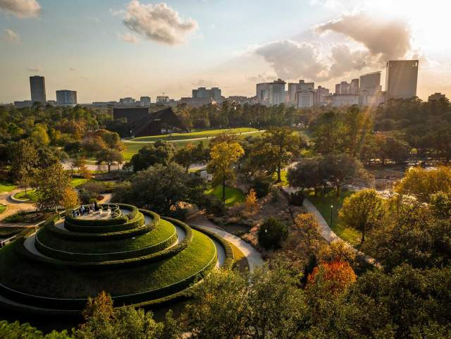
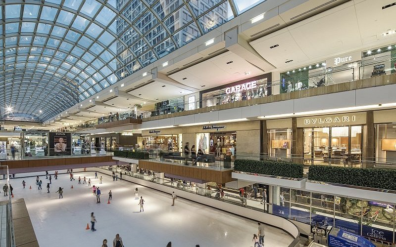

Where to go. . .
From Space Exploration to City Adventures
Welcome to the attractions page of Houston, a city filled with exciting destinations for visitors of all ages. Whether you enjoy science, nature, shopping, animals, or history, Houston offers countless places to explore and enjoy. The city is known for combining world-class entertainment with family-friendly experiences, making it a great place for vacations and weekend adventures. From famous landmarks to relaxing outdoor spaces, Houston has attractions that create lasting memories for everyone who visits.

Photo Source: University of Houston
One of Houston’s most famous destinations is Space Center Houston, the official visitor center for NASA’s Johnson Space Center. Here, guests can learn about space missions, see real spacecraft, view astronaut exhibits, and even tour NASA facilities. It is one of the most popular attractions in Texas and a must-visit for anyone interested in science and exploration. Another popular destination is Houston Zoo, home to thousands of animals from around the world. Families especially enjoy seeing lions, elephants, giraffes, and many other fascinating species while learning about wildlife conservation.

Photo Source: Space Center Houston
For visitors who enjoy art and learning, the Museum District offers a collection of museums featuring history, science, art, and culture. This area is perfect for spending an entire day exploring exhibits and discovering new ideas. Nature lovers often visit Buffalo Bayou Park, a beautiful outdoor space with walking trails, bike paths, gardens, and scenic views of the downtown skyline. It is a peaceful place to relax, exercise, or take photos while enjoying the outdoors.

Photo Source: Casiola
If shopping and entertainment are your style, The Galleria is one of the city’s top attractions. As the largest shopping center in Texas, it features luxury stores, restaurants, entertainment, and even an indoor ice-skating rink. Visitors can shop, dine, and spend hours exploring everything the mall has to offer. No matter what type of adventure you are looking for, Houston’s attractions provide fun, excitement, and unforgettable experiences for every guest.

Photo Source: TripAdvisor
Quick Facts
- Space Center Houston features real spacecraft, astronaut exhibits, and tram tours to Johnson Space Center.
- Houston Museum District is home to 19 museums plus attractions like Hermann Park and the Houston Zoo, making it one of the city’s top cultural areas.
- Houston Zoo spans 55 acres and is one of Houston’s most popular family attractions, housing thousands of animals and conservation exhibits.
Top 3 Things to Bring
- Phone – for maps, tickets, photos, and emergencies.
- Water bottle – to stay hydrated, especially in Houston heat.
- Comfortable shoes – many attractions involve lots of walking.